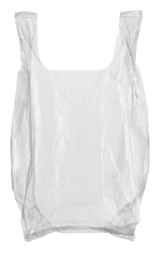

Module 6—Petrochemicals
 Reflect on the Big Picture
Reflect on the Big Picture

© Dzarek/shutterstock
The plastic shopping bag is such a convenient and common item. Have you noticed recently that some stores are charging you if you want a plastic bag or are encouraging you to purchase a reusable bag made of other materials? The plastic shopping bag frequently ends up in landfills or as litter and can take thousands of years to degrade.
Some cities in Alberta are considering placing a ban or a tax on plastic shopping bags. It is hoped that this approach might significantly reduce the amount of plastic entering landfills. Plastic shopping bags like the one pictured here are made from the petrochemical polythethene. Polythethene is derived from ethane present in natural gas or is produced by cracking crude oil.
Does society’s current use of plastic bags represent an intelligent use of petrochemicals and natural resources? Does charging for, taxing, or banning the use of plastic shopping bags promote a more intelligent use of petrochemicals and petroleum?
 Discuss
Discuss
D 2. Respond to the questions listed in Reflect on the Big Picture. Post your response in the discussion area for your class. Read the responses of at least two other students in your class. Share your thoughts on the responses submitted by other students and, if necessary, revise your response. Save a copy of your response in your course folder.
 Module 6: Lesson 1 Assignment
Module 6: Lesson 1 Assignment
Submit your completed Module 6: Lesson 1 Assignment to your teacher.
Make sure you have updated and saved information in your document on perspectives, evidence, and arguments regarding the use of hydrocarbons as petrochemicals or as fuel.